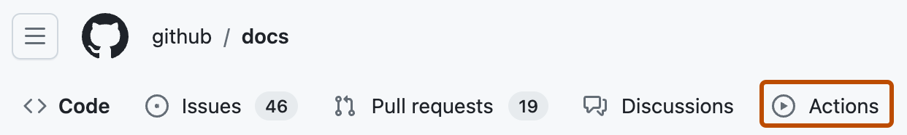
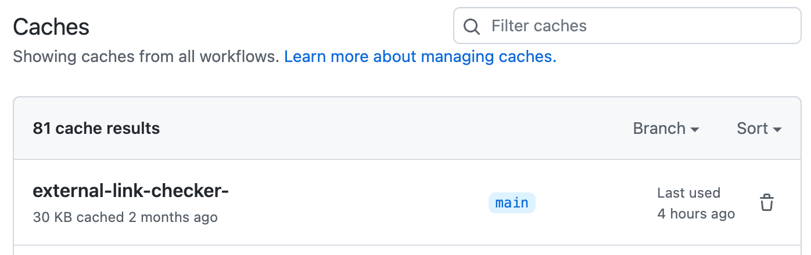
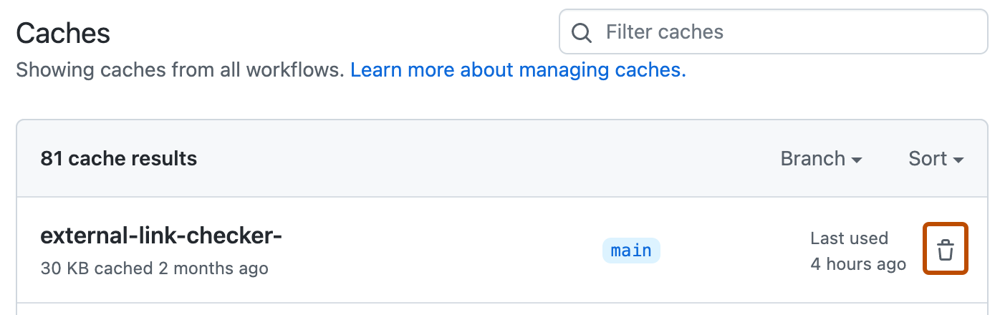

You can monitor, filter, and delete dependency caches created from your workflows.
This article describes managing caches with the GitHub web interface, but you can also manage them:
gh cache subcommand from the command line. See the GitHub CLI documentation.You can use the web interface to view a list of cache entries for a repository. In the cache list, you can see how much disk space each cache is using, when the cache was created, and when the cache was last used.
On GitHub, navigate to the main page of the repository.
Under your repository name, click Actions.

In the left sidebar, under the "Management" section, click Caches.
Review the list of cache entries for the repository.
key: key-name in the Filter caches field. The cache list will display caches from all branches where the key was used.
Users with write access to a repository can use the GitHub web interface to delete cache entries.
On GitHub, navigate to the main page of the repository.
Under your repository name, click Actions.
In the left sidebar, under the "Management" section, click Caches.
To the right of the cache entry you want to delete, click .

Caches have branch scope restrictions in place, which means some caches have limited usage options. For more information on cache scope restrictions, see Dependency caching reference. If caches limited to a specific branch are using a lot of storage quota, it may cause caches from the default branch to be created and deleted at a high frequency.
For example, a repository could have many new pull requests opened, each with their own caches that are restricted to that branch. These caches could take up the majority of the cache storage for that repository. Once a repository has reached its maximum cache storage, the cache eviction policy will create space by deleting the caches in order of last access date, from oldest to most recent. In order to prevent cache thrashing when this happens, you can set up workflows to delete caches on a faster cadence than the cache eviction policy will. You can use the GitHub CLI to delete caches for specific branches.
The following example workflow uses gh cache to delete up to 100 caches created by a branch once a pull request is closed.
To run the following example on cross-repository pull requests or pull requests from forks, you can trigger the workflow with the pull_request_target event. If you do use pull_request_target to trigger the workflow, there are security considerations to keep in mind. For more information, see Events that trigger workflows.
name: Cleanup github runner caches on closed pull requests
on:
pull_request:
types:
- closed
jobs:
cleanup:
runs-on: ubuntu-latest
permissions:
actions: write
steps:
- name: Cleanup
run: |
echo "Fetching list of cache keys"
cacheKeysForPR=$(gh cache list --ref $BRANCH --limit 100 --json id --jq '.[].id')
## Setting this to not fail the workflow while deleting cache keys.
set +e
echo "Deleting caches..."
for cacheKey in $cacheKeysForPR
do
gh cache delete $cacheKey
done
echo "Done"
env:
GH_TOKEN: ${{ github.token }}
GH_REPO: ${{ github.repository }}
BRANCH: refs/pull/${{ github.event.pull_request.number }}/merge
Alternatively, you can use the API to automatically list or delete all caches on your own cadence. For more information, see REST API endpoints for GitHub Actions cache.